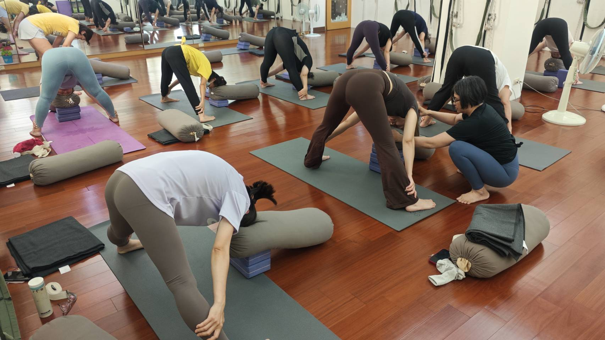
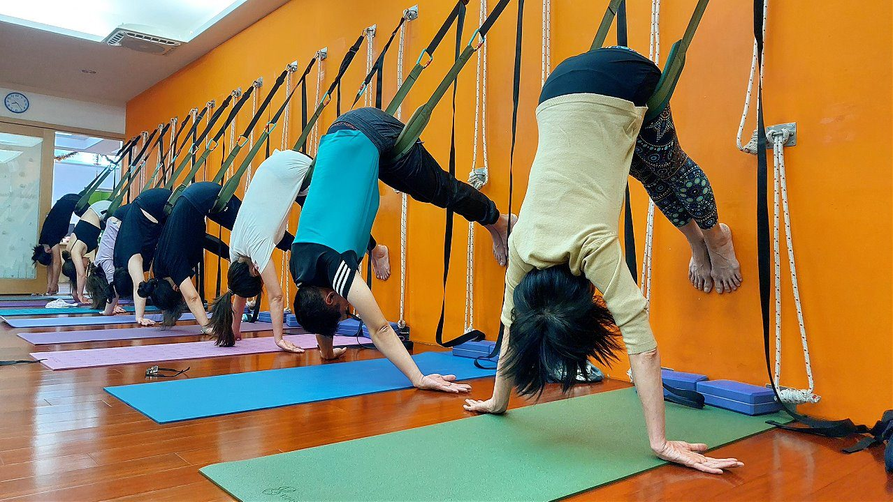

為什麼你按摩完，隔天又緊回去了？

按摩、放鬆椅、筋膜槍……你一定試過。當下真的很鬆、很舒服，但常常隔天一坐回電腦前，肩頸又硬回去了。不是按得不夠力，也不是你太緊張——問題出在「只放鬆、沒重建」。
放鬆，只做了一半的事
肩頸會緊，通常是因為前面（胸口）太緊、後面（上背）太弱。胸口把肩膀往前拉，上背卻叫不動、撐不住，於是脖子和斜方肌只好一直硬撐——這就是它老是酸、老是緊的原因。
按摩、筋膜槍做的是「把緊的地方鬆開」。這一步很好，但它沒有處理另一半：把睡著的上背肌肉叫醒、讓它重新出力。鬆完之後，前緊後弱的失衡還在，姿勢一回到原樣，肌肉又被拉回緊繃——所以隔天就打回原形。
一句話重點
放鬆是「踩剎車」，重建是「換方向」。只放鬆不重建，車還是會往原本的方向滑回去。
要「留得住」，得先讓身體記住新位置
真正讓肩頸不再緊回去的關鍵，是兩件事一起做：把胸口打開，同時喚醒上背。當後背有力量把肩膀穩穩帶回去，脖子就不用再代償，緊繃自然就少了。
這也是壁繩派得上用場的地方。繩子給你穩定的支撐，讓你能安全地把緊縮的胸口打開；同時在有依靠的狀態下，慢慢練到平常叫不動的上背。你不需要很有力、很柔軟，繩子會幫你借力——對「越坐越緊」的上班族特別友善。

今天就能做的一件小事
每坐 40 分鐘，站起來做這個：雙手在背後互扣，把胸口輕輕打開、肩胛往後往下夾，停 5 個深呼吸。它是在提醒你的身體「往回走」——雖然不會一次解決，但比起只按摩，這一步才是真正把緊繃「拆掉」的方向。
本文是體態與姿勢的一般衛教與練習分享，不是醫療診斷或治療。若有疼痛或特殊病史，請先諮詢醫師。